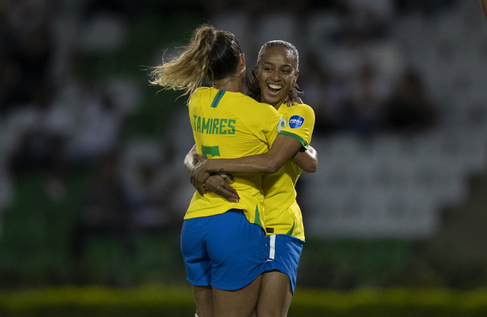

Goleira Natascha fala sobre expectativa para Copa América e comemora chance com Pia
08/07/2022 00h08 - Atualizado 08/07/2022 00h08
A goleira Natascha, de nacionalidade suíça e brasileira, foi convocada pela terceira vez para defender a Seleção Brasileira feminina. Agora, a atleta do Flamengo, de 24 anos, está próxima de integrar a equipe de Pia Sundhage pela primeira vez em uma competição oficial: a Copa América feminina.
“Estou muito feliz de estar aqui e poder participar da minha primeira Copa América. Estou muito honrada de poder vestir esta camisa e ajudar da melhor forma que puder”, disse a jogadora.
Natascha ocupa o lugar da colega Letícia Izidoro, do Corinthians, que foi cortada de última hora da lista de convocadas após ter constatada uma lesão no ligamento colateral medial do joelho esquerdo.
“Para mim, a convocação foi uma surpresa. Infelizmente, aconteceu após a lesão de alguém que eu admiro bastante e que respeito muito como pessoa. Eu sabia que a possibilidade existia, mas não tinha certeza, então me preparei e continuei treinando enquanto estava de folga no meu clube”, contou Natascha.
“Tinha esperança de receber essa convocação mas, por tudo que passei neste ano, pensei que talvez pudesse não acontecer. Estou ainda mais feliz de estar aqui e vou dar o meu melhor para apoiar a equipe. Estou me sentindo muito bem, as meninas me acolheram muito bem e estão me ajudando com tudo que podem, com o idioma e os exercícios, neste momento em que cheguei num ambiente diferente”, concluiu a goleira.